측량및지형공간정보기사 (2020-09-26 기출문제)
1과목: 측지학 및 위성측위시스템
1. 다음 설명 중 옳지 않은 것은?
- 천문측량에 의한 경·위도 측정은 관측점마다 독립적으로 이루어진다.
- 지구상의 위치는 지리학적 경·위도 및 준거타원체상으로부터의 높이로 표시된다.
- 목적하는 측량의 정확도에 따라서 지구를 평면으로 가정할 수 있다.
- 지구상의 위치는 직각좌표나 극좌표 등으로 표시하기도 한다.
(정답률: 51%)

2. 중력이상에 대한 설명으로 틀린 것은?
- 일반적으로 실측중력값과 계산식에 의한 이론적 중력값은 일치한다.
- 중력이상이 (+)이면 그 지점 부근에 무거운 물질이 있는 것으로 추정할 수 있다.
- 중력이상값은 실측중력값에서 이론중력값을 뺀 값으로 계산된다.
- 중력이상으로 지표면 밑의 상태를 추정할 수 있다.
(정답률: 71%)
3. 탄성파 측량에 대한 설명으로 틀린 것은?
- 탄성파 측량은 굴절법과 반사법이 있다.
- 탄성파의 전파속도 관측으로 지반탐사가 가능하다.
- 탄성파에는 전자기파와 내면파 2종류가 있다.
- 탄성파는 탄성체에 충격으로 급격한 변형을 주었을 때 생기는 파이다.
(정답률: 64%)
4. 하나의 관측방정식에서 다른 관측방정식을 빼는 차분법 중 사이클 슬립(cycle slip)의 문제를 가장 잘 해결할 수 있는 방법은?
- 단순 차분
- 2중 차분
- 3중 차분
- 4중 차분
(정답률: 76%)
5. 어느 구면 삼각형이 구과량 30“이고, 면적이 0.355m2이라면 구의 반지름은?
- 39.8m
- 42.3m
- 49.4m
- 60.0m
(정답률: 60%)
6. 측지학에서 사용하는 투영에 대한 설명으로 옳은 것은?
- 동서보다 남북이 긴 지역에는 원뿔투영을 주로 사용한다.
- 대축척 지형도 제작에는 주로 등각투영을 사용한다.
- 투영은 왜곡 없이 구면을 평면으로 나타내는 것이다.
- 투영면 상의 거리는 실제 거리와 일치한다.
(정답률: 65%)
7. 지자기측량에 관한 설명으로 옳지 않은 것은?
- 지자기는 그 방향과 크기를 구함으로써 결정된다.
- 지자기의 3요소란 수평분력, 편각 및 복각을 말한다.
- 북반구에서 복각은 음(-)의 값으로 나타난다.
- 편각이란 진북과 수평분력이 이루는 각을 말한다.
(정답률: 75%)
8. 반송파(carrier)에 대한 미지의 수로서, 위성과 수신기 안테나 간 온전한 파장의 개수를 무엇이라 하는가?
- 모호정수
- AS(anti-spoofing)
- 다중경로
- 삼중차
(정답률: 80%)
9. GNSS 단독측위의 정확도에 영향을 미치는 요소가 아닌 것은?
- 위성 궤도정보의 정확성
- 관측 위성의 배치
- 전리층과 대류권의 영향
- 위성의 의사 잡음 부호
(정답률: 64%)
10. GNSS를 이용한 단독측위에 대한 설명으로 틀린 것은?
- GNSS 수신기 한 대로 위치결정을 할 수 있다.
- 실시간으로 현재 위치를 파악할 수 있다.
- 코드 신호를 이용하여 산출된 의사거리를 사용하여 위치를 결정한다.
- 우주공간부터 항공, 해상, 해저, 지상, 지하등 어느 곳을 막론하고 사용이 가능하다.
(정답률: 73%)
11. 위도 38°, 경도 127°인 지점의 묘유선의 곡률반지름(N)이 2300km, 타원체고(H)가 130m이었다면 이 지점의 3차원 직각좌표증×좌표 값은?
- -1090806m
- -2090806m
- +1090806m
- +2090806m
(정답률: 48%)
12. DGPS에 대한 설명으로 옳지 않은 것은?
- DGPS 측량은 실시간 위치결정이 불가능하다.
- 일반적으로 DGPS가 단독측위보다 정확하다.
- DGPS에서는 2개의 수신기에 관측된 자료를 사용한다.
- 기선의 길이가 길수록 DGPS의 정확도는 낮다.
(정답률: 73%)
13. GPS 궤도와 관련된 설명 중 틀린 것은?
- GPS 위성의 궤도는 타원 형태이다.
- GPS 위성의 회전주기는 약 12시간이다.
- GPS 위성의 고도는 약 2000km 이다.
- GPS 위성들은 모두 상이한 코드정보를 전송한다.
(정답률: 64%)
14. 다음의 (A), (B)의 명칭으로 옳은 것은?
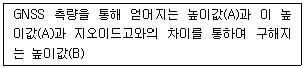
- (A) 비고, (B) 타원체고
- (A) 정표고, (B) 타원체고
- (A) 타원체고, (B) 비고
- (A) 타원체고, (B) 정표고
(정답률: 67%)
15. GNSS의 주표구성 중 궤도와 시각 결정을 위한 위성 추적을 담당하는 부분은?
- 우주 부분
- 제어 부분
- 사용자 부분
- 위성 부분
(정답률: 67%)
16. 관측한 타원체의 장반경(a)이 6400km, 단반경(b)이 6300km라면 타원체의 편평률은?
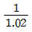
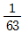
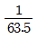
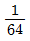
(정답률: 74%)
17. 중력이상을 보정할 때 관측값으로부터 기준면사이의 질량을 무시하고 기준면으로부터 높이(또는 깊이)의 영향을 고려하여 실시하는 보정은?
- 부게보정(Bouguer correction)
- 에토베스보정(Eotvos correction)
- 지각균형보정(lsostatic correction)
- 후리-에어보정(Free-air correction)
(정답률: 47%)
18. RINEX 형식이 포함할 수 있는 내용으로 거리가 먼 것은?
- GPS 위성의 C/A 코드 의사거리
- GLONASS 위성의 항법 메시지
- GEO(Geostationary) 위성의 항법 메시지
- IKONOS 위성의 항법 메시지
(정답률: 65%)
19. 다음 중 기하학적 측지학에 속하지 않는 것은?
- 위성측지
- 중력측정
- 3차원 위치결정
- 시의 결정
(정답률: 62%)
20. 항정선(rhumb line)에 대한 설명으로 옳은 것은?
- 자오선과 항상 일정한 각도를 유지하는 지표의 선
- 양극을 지나는 대원의 북극과 남극 사이의 절반으로 중심각이 180°의 대원호
- 지표상 두 점간의 최단거리로 지심과 지표상 두 점을 포함하는 평면과 지표면의 교선
- 지구타원체상 한 점의 법선을 포함하며 그 점을 지나는 자오면과 직교하는 평면과 타원체면과의 교선
(정답률: 66%)
2과목: 응용측량
21. 수심이 H인 하천의 유속 측정에서 수면부터 0.2H, 0.4H, 0.6H, 0.8H인 곳의 유속이 각각 0.565m/s, 0.514m/s, 0.450m/s, 0.385m/s 이었다면, 2점법에 의한 평균유속은?
- 0.450m/s
- 0.475m/s
- 0.482m/s
- 0.508m/s
(정답률: 60%)
22. 노선측량 작업에서 중심선 설치를 하는 단계의 측량은?
- 공사측량
- 예비측량
- 조사측량
- 실시설계측량
(정답률: 47%)
23. 하구 심천측량에 관한 설명으로 옳지 않은 것은?
- 하구 심천측량은 하구 부근 하저 및 해저의 지형을 조사한다.
- 하구의 항만시설, 해안보전시설의 설계 자료로 사용된다.
- 조위를 관측하고 실측한 수심을 기본수준면을 기준으로 하는 수심으로 보정하여 심천측량의 정확도를 높인다.
- 해안에서는 일반적으로 수심 100m 되는 앞바다까지를 측량구역으로 한다.
(정답률: 57%)
24. 유량측정 장소 선정 시의 만족시킬 조건으로 옳지 않은 것은?
- 측정개소 전후의 유로는 일정한 단면을 가지고 있는 곳이 좋다.
- 합류에 의하여 불규칙한 영향을 받지 않는 곳이 좋다.
- 지질이 연약하여 세굴, 퇴적이 활발한 곳이 좋다.
- 와류와 역류가 생기지 않는 곳이 좋다.
(정답률: 74%)
25. 터널 내 A, B점의 좌표가 (1328m, 810m), (1734m, 589m)이고 높이가 각각 86.3m, 112.4m인 A, B점을 연결하는 터널을 굴진할 때 이 터널의 경사거리는?
- 341.5m
- 363.1m
- 463.0m
- 470.2m
(정답률: 54%)
26. 지하시설물 측량방법의 하나로 전자기파를 사용하여 전자기파의 반사와 회절 현상 등을 측정하고 이를 해석하여 지하구조 및 시설물 등을 관측하는 방법은?
- 탄성파 굴절법 탐사
- 전자유도 탐사
- 음파 탐사
- GPR 탐사
(정답률: 44%)
27. 수로도지에 속하지 않는 것은?
- 해도
- 영해기점도
- 해저지형도
- 경계점좌표등록부
(정답률: 71%)
28. 신설도로의 구간 No.10과 No.10+10m 사이에 도로폭 20m, 성토고 1m, 양단의 성토기울기 1:1.5인 단편으로 도로를 건설하고자 할 때 이 구간의 성토량은? (단, 단면의 크기는 일정하다.)
- 207
- 215
- 414
- 430
(정답률: 49%)
29. 다음 중 면적을 계산할 수 없는 경우는?
- 삼각형에서 세 변의 길이를 아는 경우
- 사각형에서 네 변의 길이를 아는 경우
- 오각형에서 각 꼭지점의 좌표를 아는 경우
- 정육각형에서 변의 길이를 아는 경우
(정답률: 57%)
30. 고속도로의 완화곡선으로 주로 사용하는 것은?
- 단곡선
- 3차원포물선
- 렘니스케이트 곡선
- 클로소이드 곡선
(정답률: 68%)
31. 단곡선 설치에서 교각이 60°, 반지름이 100m이고 곡선시점까지의 거리가 120.85m 일 때 곡선종점까지의 추가거리는?
- 275.87m
- 225.57m
- 215.87m
- 1⑤.57m
(정답률: 55%)
32. 터널 양쪽 입구의 중심선상에 기준점을 설치하고 이 두 점의 좌표를 구하여 터널을 굴진하기 위한 방향을 맞춤과 동시에 정확한 거리를 찾아내는 것이 목적인 터널측량은?
- 수심측량
- 수준측량
- 중심선측량
- 지형측량
(정답률: 73%)
33. 계산된 완화곡선의 캔트(cant)가 C일 때, 계산시 사용한 속도와 반지름을 모두 2배로 증가시킬 때, 캔트는?
- 2C
- 4C
- 6C
- 8C
(정답률: 66%)
34. 다중빔음향측심기의 장비점검 및 보정시에 평탄한 해저에서 동일한 측심선을 따라 왕복측량을 실시하여 조사선의 좌측 및 우측의 기울기 차이로 발생하는 오차를 보정하는 것은?
- 롤보정
- 피치보정
- 헤딩보정
- 시간보정
(정답률: 48%)
35. 원곡선 설치를 위한 측점위치를 좌표가 표와 같을 경우 원곡선의 시점으로부터 원곡선상 처음 중심선(P1)까지의 편각은?
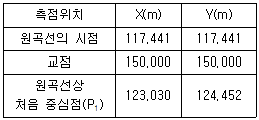
- 3°26‘20“
- 6°26’20”
- 45°00’00“
- 51°26’20“
(정답률: 36%)
36. 터널공사를 위하여 그림과 같이 천정에 측점을 설치하고 a=1.75, b=1.58m, 경사거리 S=35m, α=17°45’을 관측하였을 때 A, B 두 점 간의 고저차는?
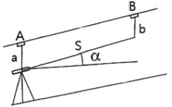
- 10.50m
- 10.67m
- 10.84m
- 13.83m
(정답률: 54%)
37. 지거의 간격이 3m로 등간격이고 각 지거가 y1=3.8m, y2=8.5m, y3=10.4m, y4=11.8m, y5=5.9m이라면 심프슨 제1법칙을 이용하여 구한 면적은?
- 58.4m2
- 78.6m2
- 111.7m2
- 150.3m2
(정답률: 53%)
38. 그림과 같은 면적을 m:n으로 분할하고자 할 때
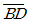
의 길이를 구하기 위한 식으로 옳은 것은?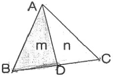
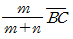
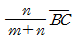
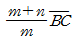
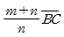
(정답률: 71%)
39. 노선측량에서 종단면도를 작성할 때, 표기사항이 아닌 것은?
- 측점의 계획고
- 측점의 계획단면적
- 측점 간 수평거리
- 측점의 지반고
(정답률: 56%)
40. 하천측량에 대한 설명 중 옳지 않은 것은?
- 골조측량을 위해 트래버스 측량을 실시할 경우에는 결합 트래버스가 되도록 한다.
- 수애선은 평수위에 의하여 정해진다.
- 수위표 설치 시 유속변동이 심한 곳에 설치한다.
- 종단측량은 하천의 양안에 설치한 거리표, 수위표, 수문 등의 높이를 관측한다.
(정답률: 66%)
3과목: 사진측량 및 원격탐사
41. 해석적 내부표정에 사용되는 부등각사상변환(affine transformation)은? (단, X, Y는 사진좌표, x,y는 관측자료, x0,y0는 원점미소변위, a,b는 미지계수를 나타낸다.)
- X= a1x2+a2y2+x0’
Y=b1x2+b2y2+y0 - X= a1x+a2y+x0’
Y= b1x+b2y+y0 - X= a1x+a2y+a3xy+x0’
Y= b1x+b2y+b3xy+y0 - X= a1x+a2y+a3xy+a4x2+a5y2+x0’
Y= b1x+b2y+b3xy+b4x2+b5y2+y0
(정답률: 45%)
42. 시차(parallax)에 대한 설명으로 옳은 것은?
- 종시차는 주점기선의 차를 반영한다.
- 종시차는 물체의 수평위치 차를 반영한다.
- 횡시차는 물체의 고저 차를 반영한다.
- 횡시차가 없어야 입체시가 된다.
(정답률: 36%)
43. 주점(principal point)에 대한 설명으로 옳은 것은?
- 카메라 렌즈의 중심으로부터 지표면에 내린 연직선이 렌즈 중심을 통과하여 사진면과 만나는 점
- 사진의 중심전으로서 렌즈의 중심으로부터 사진면에 내린 수선이 만나는 점
- 사진면에 직교되는 광선과 연직선이 이루는 각을 2등분하는 광선이 사진면에 마주치는 점
- 렌즈의 중심으로부터 지표면에 내린 수선의 발
(정답률: 50%)
44. 항공 라이다시스템에 대한 설명 중 옳지 않은 것은?
- 항공레이저스캐너와 GPS/INS 시스템으로 구성된다.
- 지표면에 대한 3차원 좌표정보를 취득하는 시스템이다.
- 항공사진측량보다 기상조건의 영향을 적게 받는다.
- 극초단파를 사용하는 수동적 센서 시스템이다.
(정답률: 68%)
45. 지역 1, 2, 3에 대해서 LANDSAT-7의 3번과 4번 밴드의 화소값을 구한 결과가 표와 같다. 각 지역의 정규화식생지수(NDVI)로 옳은 것은?
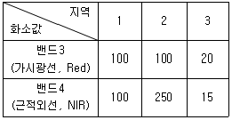
- 지역 1=0, 지역2=0.43, 지역3=-0.14
- 지역 1=0, 지역2=-0.43, 지역3=0.14
- 지역 1=1, 지역2=2.5, 지역3=0.75
- 지역 1=1, 지역2=0.44, 지역3=1.33
(정답률: 44%)
46. 그림과 같은 영상을 분석하기 위해 산림지역의 트레이닝 필드를 선정하였다. 영상에 대응하는 7×7의 지역에 대해 사변형 분류법(parallelepiped classification)을 적용하여 산림지역으로 분류된 결과로 옳은 것은? (단, 검게 칠해진 지역이 산림지역이다.)
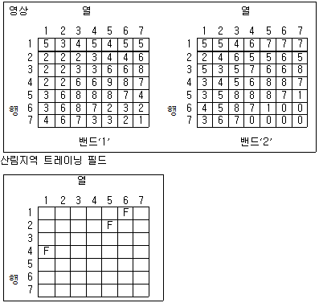
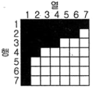
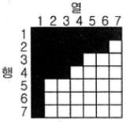
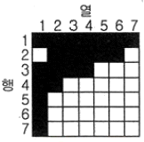
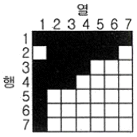
(정답률: 29%)
47. 영상을 모자이크할 경우에 모자이크된 영상내에서 경계선이 보이게 된다. 이 경계선을 중심으로 일정한 폭을 설정하여 영상을 부드럽게 처리할 수 있는 방법은?
- 영상 와핑(image warping)
- 영상 페더링(image feathering)
- 영상 스트레칭(image stretching)
- 히스토그램 평활화(histogram equalization)
(정답률: 57%)
48. 다음 중 Pushbroom 스캐닝 방식의 센서는?
- SPOT 위성의 HRV 센서
- LANDSAT 위성의 ETM+센서
- NOAA 위성의 AVHRR 센서
- RADARSAT 위성의 SAR센서
(정답률: 47%)
49. 원격탐사 영상의 해상도 중 영상의 개개화소가 표현 가능한 지상의 면적을 의미하는 것은?
- 분광해상도(spectral resolution)
- 방사해상도(radiometric resolution)
- 공간해상도(spatial resolution)
- 주기해상도(temporal resolution)
(정답률: 56%)
50. 과고감(vertical exaggeration)에 대한 설명으로 옳지 않은 것은?
- 항공사진을 입체시 하면 산지는 실제보다 높게 돌출되어 보인다.
- 과고감으로 인하여 산악지형보다는 평탄한 지형의 지형판독이 어렵게 된다.
- 항공사진을 입체시 하면 사면의 경사는 실제 경사보다 급한 느낌을 준다.
- 항공사진을 입체시할 때 과고감은 촬영에 사용한 렌즈의 초점거리, 사진의 중복도에 따라 변한다.
(정답률: 65%)
51. 항공사진측량에 대한 설명으로 옳지 않은 것은?
- 소규모 지역을 대상으로 하는 경우에는 소요비용이 증가할 수 있다.
- 행정경계, 지명, 도로명, 지번 등의 정보는 현장측량을 통해 보완해야 한다.
- 시간의 변화에 따른 대상물의 변화와 같은 4차원 정보 취득에는 적용이 곤란하다.
- 구름, 바람, 조도, 적설 등의 영향이 있다.
(정답률: 62%)
52. 초점거리 210mm의 항공사진이 15°의 경사각을 가지고 있을 때 사진에서 연직점(nadir point)과 주점(principal point)의 거리는?
- 56.3mm
- 76.3mm
- 96.3mm
- 121.3mm
(정답률: 44%)
53. 표고 300인 지역을 초점거리 150mm인 카메라로 표고 3000m에서 항공사진측량한 경우에 이 지역의 사진축척은?
- 1:20000
- 1:30000
- 1:15000
- 1:18000
(정답률: 53%)
54. 공간해상도가 높은 전정색 영상과 공간해상도가 낮은 칼라(다중분광)영상을 합성하여 공간해상도가 높은 칼라영상을 만드는데 사용하는 영상처리방법은?
- Fourier 변환
- 영상융합(resolution merge)변환
- NDVI(normalized difference vegetation index)변환
- 공간 필터링(spatial filtering)
(정답률: 62%)
55. 항공사진측량을 통해 촬영한 한 장의 사진에서 대상물의 지상좌표로부터 사진좌표를 결정하기 위해 필요한 요소로 알맞은 것은?
- 편위수정 요소와 상호표정 요소
- 편위수정 요소와 절대표정 요소
- 내부표정 요소와 편위수정 요소
- 내부표정 요소와 외부표정 요소
(정답률: 42%)
56. 표정작업중 렌즈 왜곡, 대기굴절, 지구곡률 등의 보정이 이루어지는 것은?
- 내부표정
- 절대표정
- 상호표정
- 접합표정
(정답률: 50%)
57. 상호표정에 대한 설명으로 옳은 것은?
- 평면(x, z)방향 시차를 소거하는 것
- 높이(z)방향 시차를 소거하는 것
- 횡(x)방향 시차를 소거하는 것
- 종(y)방향 시차를 소거하는 것
(정답률: 56%)
58. 절대표정에서 결정되는 것으로 옳은 것은?
- 축척, 수준면, 위치
- 촬영점의 위치, 회전각, 주점
- 초점거리, 렌즈왜곡, 대기보정
- 입체사진의 기선길이, 회전각, 중복도
(정답률: 49%)
59. 항공사진의 판독에 관한 설명으로 옳지 않은 것은?
- 판독의 기초가 되는 것은 사진 상의 형상, 음영 및 색조 등이다.
- 지표면의 기복에 대한 판독은 입체시로 하여야 한다.
- 사진판독에 있어서 표정점의 배치는 가장 중요한 요소이다.
- 판독하려고 하는 지방의 지방적 특색에 대하여 지식을 갖고 있어야 한다.
(정답률: 30%)
60. 초점거리가 15cm, 사진크기 23cm×23cm인 광각사진기로 종중복도 70%, 노출점간 최소 소요시간 30초, 촬영고도 2000m로 촬영하고자 한다면 항공기 운항속도는?
- 110.4km/h
- 158.6km/h
- 186.5km/h
- 200.8km/h
(정답률: 30%)
4과목: 지리정보시스템
61. 다음과 같은 절차를 따르는 보간법은?
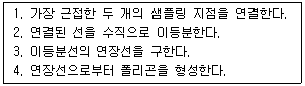
- 지표 분석(surface analysis)
- 인접성 분석(proximity analysis)
- 네트워크 분석(network analysis)
- 티센폴리곤 분석(Thiessen polygon analysis)
(정답률: 56%)
62. NGIS(National GIS)의 추진배경으로 적합하지 않은 것은?
- 지리정보시스템(GIS)의 중복투자 방지 및 공동구축에 대한 필요성 제기
- 국가차원에서 지리정보시스템(GIS)의 주도적 추진 필요성 제기
- 통신망의 보안관리 필요성 증대
- 지도와 도면을 사용하는 행정업무의 자동화 필요성 증대
(정답률: 64%)
63. 벡터(Vector)방식의 데이터 모형에 대한 설명으로 틀린 것은?
- 선으로 나타나는 객체의 경우 둘 또는 그이상의 좌표와 선분으로 구성된다.
- 벡터 모양의 모든 객체는 수학적 위치값을 갖는다.
- 대상물들은 점, 선, 면 요소로 형성된다.
- 대상 지역 모든 곳의 정보를 담고 있다.
(정답률: 66%)
64. 크리깅(kriging)보간법에 대한 설명으로 틀린 것은?
- 토양이나 지질, 수문과 관련된 현살의 공간적 변이의 크기를 정량화하는데 활용된다.
- 지역화된 변수(regionalized variables) 이론에 토대를 두고 있다.
- 표본지점들간의 Z값의 변이가 거리에 따라 어느 정도 방향성을 갖는 것을 전제로 하고 있다.
- Simple 크리깅, Ordinary 크리깅, Spatial 크리깅으로 분류된다.
(정답률: 45%)
65. 다음과 같은 문제점을 해결하기 위한 노력과 거리가 먼 것은?
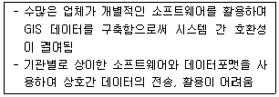
- 표준코드 지정
- 자료 포맷의 표준화
- ISO/TC211 활동
- 자료 출처의 다양화
(정답률: 50%)
66. 그림의 빗금친 부분의 결과가 나타나기 위한 공간연산은?
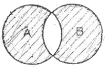
- (A-B) ∩ (B-A)
- (A∪B) - A
- (A-B) ∪ (B-A)
- (A∪B) - B
(정답률: 59%)
67. 논리연산(AND) 처리 후 ㉠~㉣의 결과값이 순서대로 (㉠-㉡-㉢-㉣) 바르게 표시된 것은?
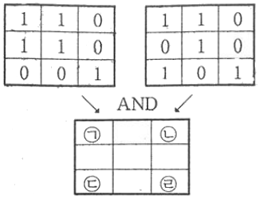
- 1-1-0-1
- 1-0-1-0
- 1-0-0-1
- 0-1-0-0
(정답률: 57%)
68. 지리정보시스템(GIS)에 대한 설명으로 틀린 것은?
- 다양한 공간분석 기능과 모델링을 통해 고부가가치의 정보를 추출하여 의사결정을 지원할 수 있다.
- 자료입력 방식 중 래스터방식이 벡터방식에 비해 정확하게 경계선을 추출할 수 있다.
- 공간 데이터와 속성 데이터 이외에도 다양한 데이터 유형을 통합하여 사용이 가능하다.
- 지형공간정보를 구성하는 속성정보는 위치에 관련된 정성적인 자료 및 정량적인 자료를 포함한다.
(정답률: 66%)
69. 다음 중 관계형 데이터베이스를 위한 대표적인 언어는?
- SQL
- DLL
- DLG
- COGO
(정답률: 72%)
70. 지리정보시스템(GIS) 데이터 입력에 사용할 수 있는 장치가 아닌 것은?
- 드럼 스캐너
- 잉크젯 플로터
- 디지타이저
- 터치스크린
(정답률: 72%)
71. 실세계에 존재하고 있는 지형·지물(feature)을 지리정보시스템(GIS)에서 활용 가능한 객체(object)로 변환하는 것은?
- 추상화(abstraction)
- 일반화(generalization)
- 세분화(segmentation)
- 통합화(integration)
(정답률: 44%)
72. 지리정보자료의 내용, 품질, 조건, 기타 다양한 특징을 설명하는 자료에 관한 배경정보를 무엇이라 하는가?
- 메타데이터
- 데이터생산사양
- 데이터모델
- 위상구조
(정답률: 73%)
73. 수치표고모형(DEM)만을 이용하여 할 수 있는 작업과 거리가 먼 것은?
- 음영기복도 제작
- 토지피복 분석
- 가시도 분석
- 물의 흐름방향 분석
(정답률: 58%)
74. 다음이 설명하고 있는 것으로 옳은 것은?
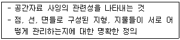
- 계층구조
- 자료구조
- 위상구조
- 벡터구조
(정답률: 66%)
75. 다음 중 지리정보자료와 거리가 먼 것은?
- 지역별 연평균 강우량 정보
- 행정구역별 인구밀도 정보
- 대상지역의 경사도분포 정보
- 직업군별 평균소득 정보
(정답률: 75%)
76. 보다 적으 자료량으로 지형지물의 특성을 간편하게 표현하기 위해 선형의 특징점을 남기고 불필요한 버텍스(vertex)를 삭제하는 일반화 기법은?
- 단순화
- 완만화
- 축약처리
- 정리처리
(정답률: 68%)
77. SQL의 표준 구문으로 적합한 것은?
- SELECT “item명” FROM “table명” WHERE “조건절”
- SELECT “table명” FROM “item명” WHERE “조건절”
- SELECT “조건절” FROM “table명” WHERE “item”
- SELECT “item명” FROM “조건절” WHERE “table명”
(정답률: 49%)
78. 다음의 ( )에 공통으로 들어갈 용어로 옳은 것은?
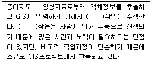
- 스캐닝(scanning)
- 디지타이징(digitizing)
- 원격탐사(remote sensing)
- GPS(global positioning system)
(정답률: 76%)
79. 축척 1:5000 수치지형도에서 얻을 수 없는 정보는?
- 표고 정보
- 도로 선형
- 수계 정보
- 필지 정보
(정답률: 56%)
80. 표면에서 표본추출된 표고점들을 선택적으로 연결하여 형성된 겹치지 않는 부정형의 삼각형으로 이루어진 모자이크 식으로 표현하는 방법은?
- TIN
- DEM
- GRID
- MESH
(정답률: 75%)
5과목: 측량학
81. 하천이나 항만, 해안 등을 심천측량하고 측점에 숫자를 기입하여 그 높이를 표시하는 방법은?
- 점고법
- 음영법
- 영선법
- 등고선법
(정답률: 72%)
82. A의 좌표가 (145.32m, 256.22), B의 좌표가(-251.11m, -140.21m)일 때 AB의 방위 각은?
- 45
- 135
- 225
- 315
(정답률: 40%)
83. 도심지에서 20개의 측점을 트래버스 측량한 결과로 각오차가 50“발생했다. 이 오차의 처리가 옳은 것은? (단, 도심지의 각 측량 허용오차는 ±30”√N이며, 각 측량의 정확도는 일정하다.)
- 관측 각의 크기에 반비례하여 분배한다.
- 측선의 길이에 비례하여 분배한다.
- 등분배한다.
- 재측한다.
(정답률: 45%)
84. 평균 표고 1000m인 지표면에서 AB의 경사거리가 1500m이고, 두 점의 고저차가 150m일 때, 평균해면상에서 AB의 수평거리는? (단, 지구반지름은 6370km이다.)
- 1493.89m
- 1493.25m
- 1492.89m
- 1492.25m
(정답률: 22%)
85. 삼각측량에서 삼각점의 위치 선정에 관한 주의사항으로 옳지 않은 것은?
- 각 점이 서로 잘 보여야 한다.
- 측점 수는 될 수 있는 대로 적게 한다.
- 계속해서 연결되는 작업에 편리하여야 한다.
- 삼각형은 될 수 있는 대로 직각삼각형으로 구성한다.
(정답률: 62%)
86. 주로 지역 내의 지성선상의 위치와 표고를 실측 도시하여 이것을 기초로 현지에서 지형을 관찰하면서 등고선을 삽입하는 방법으로 비교적 소축척 산지에 이용되는 방법은?
- 좌표점법(사각형 분할법)
- 종단점법(기준점법)
- 횡단점법
- 직접법
(정답률: 51%)
87. 50m 줄자로 두 점간의 거리를 측정한 결과 175m이었다. 이 50m 줄자가 표준척보다 3cm 짧다고 할 때 두 점간의 실제의 거리는?
- 173.950m
- 174.895m
- 175.1⑤m
- 176.256m
(정답률: 57%)
88. 전자파 거리 측량기에 대한 설명으로 옳지 않은 것은?
- 전파 거리 측량기는 광파 거리 측량기보다 1변 관측의 조작시간이 짧다.
- 전파 거리 측량기는 광파 거리 측량기보다 장거리용으로 주로 사용된다.
- 전파 거리 측량기는 광파 거리 측량기보다 안개나 비 등의 기후에 비교적 영향을 받지 않는다.
- 전파 거리 측량기의 최소 조작 인원은 2명이며 광파 거리 측량기는 1명으로도 가능하다.
(정답률: 42%)
89. 그림과 같이 수준측량을 실시한 결과 A의 표척눈금이 3.560m, A의 표고 HA=100.00m이고, B의 표고 HB=101.110m이었다. B점의 표척 눈금은?
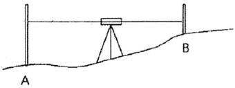
- 1.245m
- 2.450m
- 3.000m
- 3.004m
(정답률: 61%)
90. 등고선의 종류와 지형도의 축척에 따른 등고선의 간격에 대한 설명으로 틀린 것은?
- 축척 1:50000 지형도에서 계곡선은 50m 간격이다.
- 주곡선은 지형표시의 기본이 되는 곡선으로 가는 실선을 사용하여 나타낸다.
- 등고선의 간격은 측량의 목적 및 지역의 넓이, 작업에 관련한 경제성, 토지의 현황, 도면의 축척, 도면의 읽기 쉬운 정도 등을 고려하여 결정한다.
- 간곡선은 주곡선의
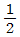
간격으로 삽입한 곡선으로 가는 파선으로 나타내며 축척 1:25000지형도에서는 5m 간격이다.
(정답률: 50%)
91. 오차론에 의해 처리되며 확률변수에 대한 수치적 값을 의미하는 오차는?
- 착오
- 누차
- 정오차
- 우연오차
(정답률: 51%)
92. 경중률(weight)에 대한 설명 중 틀린 것은?
- 관측값의 신뢰도를 나타낸다.
- 관측회수에 반비례한다.
- 관측거리에 반비례한다.
- 평균제곱근오차의 제곱에 반비례한다.
(정답률: 54%)
93. 왕복관측 값의 교차 한계를 ±5.0√Smm로 하는 수준측량에서 편도 8km를 왕복 관측하였다면 교차의 허용 한계는? (단, S:관측거리(편도)km 단위)
- ±5.6mm
- ±7.0mm
- ±14.1mm
- ±20.0mm
(정답률: 47%)
94. 삼각망 조정계산이 조건에 대한 설명이 틀린 것은?
- 어느 한 측점 주위에 형성된 모든 각의 합은 360°이어야 한다.
- 삼각망에서 각 삼각형의 내각의 합은 180°이어야 한다.
- 한 측점에서 측정한 여러 각의 합은 그 전체를 한 각으로 관측한 각과 같다.
- 한 개의 이상의 독립된 다른 경로에 따라 계산된 삼각형의 한 변의 길이는 경로에 따라 고유의 값을 갖는다.
(정답률: 49%)
95. 기본측량성과 및 공공측량성과의 고시에 필수적 사항이 아닌 것은?
- 측량성과의 보관 장소
- 설치한 측량기준점의 수
- 측량실시의 시기 및 지역
- 측량실시의 기관 및 측량자
(정답률: 44%)
96. 국가공간정보 기본법에서 다음과 같이 정의 되는 것은?
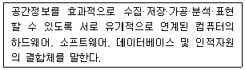
- 공간정보데이터베이스
- 국가공간정보통합체계
- 공간정보체계
- 공간객체
(정답률: 49%)
97. 다음 중 국가기준점에 속하지 않는 것은?
- 지자기점
- 지적삼각점
- 통합기준점
- 영해기준점
(정답률: 39%)
98. 다음 중 그 사유가 발생한 날부터 30일 이내에 신고하지 않아도 되는 것은?
- 측량업자의 지위를 승계한 경우
- 지점의 소재지가 변경된 경우
- 측량업등록증을 분실하여 재발급하는 경우
- 측량업자인 법인이 파산 또는 합병 외의 사유로 해산한 경우
(정답률: 54%)
99. 공간정보의 구축 및 관리 등에 관한 법률 상 용어에 대한 설명으로 옳지 않은 것은?
- 지번이란 작성된 지적도의 등록번호를 말한다.
- 측량성과란 측량을 통하여 얻은 최종 결과를 말한다.
- 측량이란 공간상에 존재하는 일정한 점들의 위치를 측정하고 그 특성을 조사하여 도면 및 수치를 표현하거나 도면상의 위치를 현지에 재현하는 것을 말한다.
- 지적측량이란 토지를 지적공부에 등록하거나 지적공부에 등록된 경계점을 지상에 복원하기 위하여 필지의 경계 또는 좌표와 면적을 측량을 말한다.
(정답률: 55%)
100. 국토교통부장관은 특정 목적을 위하여 필요하다고 인정되는 경우에 일반측량을 한 자에게 측량성과 및 측량기록의 사본제출을 요구할 수 있다. 다음 중 그 목적에 해당되지 않는 것은?
- 측량의 중복 배제
- 측량성과 심사의 편의
- 측량의 정확도 확보
- 측량에 관한 자료의 수집·분석
(정답률: 60%)